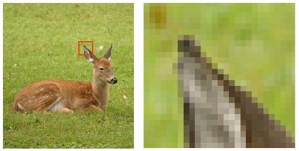

Je hebt vast weleens afgevraagd hoe de kleuren op je computer in elkaar zitten, hoe kleuren worden uitgeprint op papier of hoe je kleuren op een foto ziet. Digitaal en op papier komt dit door verschillende kleurmodellen, in je computer komt het bijvoorbeeld voor in een pixel (picture element), dat zijn kleine vierkantjes in je scherm. In je computer zit een ander kleur model dan in je printer, voor hoe dat allemaal werkt en in elkaar zit vind je de uitleg hieronder.
Het RGB-model De afkorting RGB ben je vast een keer tegengekomen, bijvoorbeeld een keyboard met RGB belichting, het staat voor Red, Green, Blue oftewel in het Nederlands Rood, Groen en Blauw. Deze drie kleuren komen voor in elke pixel in je scherm, het zijn kleine lampjes die je onder andere kan bedienen door een kleur te maken op je scherm. Als je met je telefoon camera heel erg inzoomt op het scherm kun je deze pixels zichtbaar maken. Als je deze kleuren mixt, kun je alle kleuren op je scherm maken. Kleuren maken op je laptop of op een ander scherm gaat niet zoals het gewoon gaat in de logica, met rood en groen krijg je bijvoorbeeld geel en met alle drie de kleuren krijg je wit. Een andere kleur maken doe je door te selecteren hoeveel je van elke kleur wil hebben, in de reeks begin je met rood, daarna groen en daarna blauw (rrr, ggg, bbb). In de hokjes vul je een decimaal getal in van 0 tot 255 dat bepaalt wat voor kleur je maakt, (255,255,255) brandt alles maximaal en maakt dus wit, en (0, 0, 0) maakt dus zwart, omdat je 0 van elke kleur hebt, de lampjes staan dus uit.
Een ander kleurenmodel is het CMYK-model, dat staat voor Cyan, Magenta, Yellow and Key. Dit model wordt gebruikt om de kleuren op uitgeprinte afbeeldingen, posters en tekst bijvoorbeeld zichtbaar te maken, het RGB-model werkt niet om deze kleuren uit te printen, omdat dit model is gebaseerd op het zwarte scherm van je laptop of computer en wanneer je dat uitprint wordt dat dus wit oftewel, niks. Als je alle kleuren (Cyaan, Magenta en Geel) mengt, krijg je een lichtere kleur van zwart, een soort donker grijs. Om toch zwart te kunnen maken is er een kleur toegevoegd genaamd ‘’Key Color’’ ook wel herkend als blacK, dit is een variant van het CMY-model -> CMYK-model.

Zoals eerder benoemd zijn pixels kleine vierkantjes in je scherm dat lampjes zijn om je scherm licht en kleur te geven. De resolutie betekent hoeveel pixels er in een afbeelding zitten per grootte. Of er weinig of veel pixels in een afbeelding zitten, maakt uit voor de duidelijkheid en scherpte van de afbeelding, als er weinig pixels in de afbeelding zitten (bijvoorbeeld wanneer je extreem inzoomt) zie je dat het heel wazig en onscherp is, maar wanneer er veel pixels zijn (uitgezoomt in de normale versie) zal het beeld dat je ziet scherp zijn.
Voor meer uitleg over kleurmodellen, klik hier voor een informatief filmpje